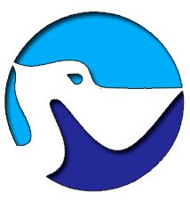

<mat-sidenav-container>
    <mat-sidenav #sidenav mode="push">
        <app-menu-mobile></app-menu-mobile>
    </mat-sidenav>
    <mat-sidenav-content>
        <div class="sticky-top animate__animated  animate__fadeInDown">
            <mat-toolbar class="navbar navbar-expand-lg navbar-dark shadow" style="z-index: 1;">
                
                <a class="navbar-brand mx-auto" routerLink="/">Stork Services</a>
                <span class="text-white navbar-toggler mr-n3 mt-n3" (click)="sidenav.toggle()">
                    <i class="fas fa-bars"></i>
                </span>
                <div class="collapse navbar-collapse pr-5">
                    <ul class="navbar-nav ml-auto">
                        <li class="nav-item mx-1">
                            <a routerLink="/" class="text-white mx-0 hvr-overline-from-center" routerLinkActive="active"
                                [routerLinkActiveOptions]="{ exact: true }" mat-button>
                                <i class="fas fa-home"></i> Inicio
                            </a>
                        </li>
                        <li class="nav-item mx-1">
                            <a routerLink="/contribuye" class="text-white mx-0 hvr-overline-from-center" mat-button
                                routerLinkActive="active">
                                <i class="fas fa-heart"></i> Contribuye
                            </a>
                        </li>
                        <li class="nav-item mx-1">
                            <a routerLink="/catalogo" routerLinkActive="active"
                                class="text-white mx-0 hvr-overline-from-center" mat-button>
                                <i class="fas fa-book"></i> Catálogo
                            </a>
                        </li>
                        <li class="nav-item mx-1">
                            <a routerLink="/acerca" routerLinkActive="active"
                                class="text-white mx-0 hvr-overline-from-center" mat-button>
                                <i class="fas fa-comment-alt"></i> Acerca de
                            </a>
                        </li>
                        <span class="text-white">|</span>
                        <li class="nav-item">
                            <a routerLink="/dashboard" class="text-white mx-1" routerLinkActive="active"
                                matTooltip="Iniciar Sesión" mat-icon-button>
                                <i class="fas fa-user"></i>
                            </a>
                        </li>
                    </ul>
                </div>
            </mat-toolbar>
            <div class="toolbar"></div>
        </div>

        <ng-content></ng-content>

        <footer class="text-white mt-3">
            <div class="bg-dark">
                <contacto></contacto>
            </div>
            <div class="text-center mt-3">
                &copy; 2020 Copyright <br />
                <small class="text-muted">Devps. Solution</small>
            </div>
        </footer>
    </mat-sidenav-content>
</mat-sidenav-container>